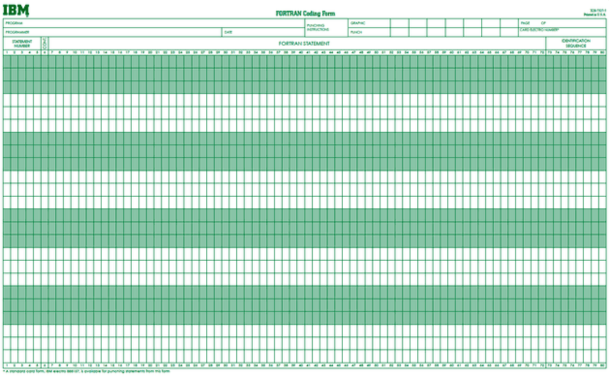

<!DOCTYPE html>


<html lang="en">


<head>
  <meta charset="utf-8" />
    
  <meta name="viewport" content="width=device-width, initial-scale=1, maximum-scale=1" />
  <title>
    Linux001 Linux简介 |  
  </title>
  <meta name="generator" content="hexo-theme-ayer">
  
  <link rel="shortcut icon" href="/osa.png" />
  
  
<link rel="stylesheet" href="/osa-null/dist/main.css">

  
<link rel="stylesheet" href="https://cdn.jsdelivr.net/gh/Shen-Yu/cdn/css/remixicon.min.css">

  
<link rel="stylesheet" href="/osa-null/css/custom.css">

  
  
<script src="https://cdn.jsdelivr.net/npm/pace-js@1.0.2/pace.min.js"></script>

  
  

  

</head>

</html>

<body>
  <div id="app">
    
      
      <canvas width="1777" height="841"
        style="position: fixed; left: 0px; top: 0px; z-index: 99999; pointer-events: none;"></canvas>
      
    <main class="content on">
      <section class="outer">
  <article
  id="post-tutorials/Linux/Linux001"
  class="article article-type-post"
  itemscope
  itemprop="blogPost"
  data-scroll-reveal
>
  <div class="article-inner">
    
    <header class="article-header">
       
<h1 class="article-title sea-center" style="border-left:0" itemprop="name">
  Linux001 Linux简介
</h1>
 

    </header>
     
    <div class="article-meta">
      <a href="/osa-null/2019/11/13/tutorials/Linux/Linux001/" class="article-date">
  <time datetime="2019-11-13T07:20:00.000Z" itemprop="datePublished">2019-11-13</time>
</a> 
  <div class="article-category">
    <a class="article-category-link" href="/osa-null/categories/Tutorials/">Tutorials</a> / <a class="article-category-link" href="/osa-null/categories/Tutorials/Linux/">Linux</a>
  </div>
  
<div class="word_count">
    <span class="post-time">
        <span class="post-meta-item-icon">
            <i class="ri-quill-pen-line"></i>
            <span class="post-meta-item-text"> Word count:</span>
            <span class="post-count">5.1k</span>
        </span>
    </span>

    <span class="post-time">
        &nbsp; | &nbsp;
        <span class="post-meta-item-icon">
            <i class="ri-book-open-line"></i>
            <span class="post-meta-item-text"> Reading time≈</span>
            <span class="post-count">17 min</span>
        </span>
    </span>
</div>
 
    </div>
      
    <div class="tocbot"></div>


  
    <div class="article-entry" itemprop="articleBody">
       
  <h1 id="Linux-简介"><a href="#Linux-简介" class="headerlink" title="Linux 简介"></a>Linux 简介</h1><blockquote>
<p>本篇教程主要讲述Linux的历史背景。linux如何由来，又经过了怎样的发展，最终达到了今天这样的世界地位。</p>
</blockquote>
<p>Well，既然是甩在Blog的教程，篇幅的话，我也不管了，为了让大家能从根本上对Unix至Linux这类系统出现的意义何在 有一定的了解，so，我们不如从盘古开天地说起。</p>
<p>话说那天（ 我也不知道是哪天:) 也别来问我..请出门左转<a href="https://www.bing.com" target="_blank" rel="noopener">bing</a>），盘古一斧子给劈出了个天和地，渐渐的，天越升越高，地越沉越低，于是就出现了处于天地之间的人间…few years later…计算机就出现了（中间略）<br>所以说盘古还是挺重要的，于是我觉得有必要在这儿提一提他。此致，敬礼  </p>
  

<a id="more"></a>

<h2 id="计算机的前世今生"><a href="#计算机的前世今生" class="headerlink" title="计算机的前世今生"></a>计算机的前世今生</h2><h3 id="计算机软件和硬件"><a href="#计算机软件和硬件" class="headerlink" title="计算机软件和硬件"></a>计算机软件和硬件</h3><p>众所周知:) 计算机大致可以分成两大部分，<code>硬件</code>和<code>软件</code>。  </p>
<ul>
<li>只有硬件没有软件的计算机系统被称之为“裸机”，我们很难用“裸机”来完成计算机日常的工作（如存储和运算）  </li>
<li>只有软件没有硬件的计算机…好像这都不叫计算机了，:sweat_smile:pass…</li>
</ul>
<p>所以必须用 <strong>特定的软件</strong> 来控制硬件的工作。最靠近计算机硬件的软件是系统软件，其中最为重要的就是 <code>操作系统</code></p>
<p>操作系统是控制和管理整个计算机系统的硬件和软件资源，合理的分配资源和调配任务，为系统用户和其他软件提供接口和环境的程序的集合 的软件。</p>
<h3 id="最早的人机交互"><a href="#最早的人机交互" class="headerlink" title="最早的人机交互"></a>最早的人机交互</h3><p>最初为了实现人机交互，是一种用打孔纸带往计算机传送0和1数据的方法。纸带如下图，具体操作过程请自行脑补…<br><br>如果都这样写你的c语言作业的话，那么 <strong>霸王</strong> 都不能拯救你的发际线了 :pensive:</p>
<p>于是，最早秃头的一群人，他们设计出了<code>批处理系统</code></p>
<h3 id="批处理系统"><a href="#批处理系统" class="headerlink" title="批处理系统"></a>批处理系统</h3><p>又到了我们最喜欢的ctrl-c ctrl-v的时候了 :sunglasses:</p>
<blockquote>
<p>首先启动计算机上的一个监督程序，在监督程序的控制下，计算机能够自动的、成批的处理一个或多个用户的作业。完成一批作业后，监督程度又从输入机读取作业存入磁带机。按照上面的步骤重复处理任务。监督程序不停的处理各个作业，实现了作业的自动转接，减少了作业的建立时间和手工操作时间，提高了计算机资源的利用率。 批处理系统又可以分为单道批处理系统、多道批处理系统、联机批处理系统、脱机批处理系统。</p>
</blockquote>
<p>批处理系统已经提高了很多计算机的执行效率，终于让我们有了一点自动自动机器的感觉了。不过他们还并不满意，他们还想再让秃头的日子延迟几年，于是又出现了下一个更牛逼的东西</p>
<h3 id="分时系统和实时系统"><a href="#分时系统和实时系统" class="headerlink" title="分时系统和实时系统"></a>分时系统和实时系统</h3><p>据说程序员的键盘掉漆最快的是ctrl、c和v键 :no_mouth:</p>
<blockquote>
<p>分时系统是把处理器的运行时间分成很短的时间片，按时间片轮流把处理机分配给各联机作业使用。 若某个作业在分配给它的时间片内不能完成其计算，则该作业暂时中断，把处理机让给另一作业使用，等待下一轮调度时再继续其运行。  </p>
<p>由于计算机速度很快，作业运行轮转得很快，给每个用户的感觉是他独占了一台计算机。而每个用户可以通过自己的终端向系统发出各种操作控制命令，在充分的人机交互情况下，完成作业的运行。为了解决分时系统不能及时响应用户指令的情况，又出现了能够在在严格的时间范围内完成事件处理，及时响应随机外部事件的实时系统。</p>
</blockquote>
<p>这才是现代计算机该有的样子嘛:grin:</p>
<p>至此，对计算机的历史的简单梳理之后，计算机基本部分也该告一段落了，接下来的就该我们这一系列教程的主角 :sparkles:<strong><em>Linux</em></strong>:sparkles: 上场了。</p>
<h2 id="Linux的老前辈Unix"><a href="#Linux的老前辈Unix" class="headerlink" title="Linux的老前辈Unix"></a>Linux的老前辈Unix</h2><h3 id="Unix诞生之前"><a href="#Unix诞生之前" class="headerlink" title="Unix诞生之前"></a>Unix诞生之前</h3><p>Unix之前的计算机大部分是采用批处理的方式。那时， <strong>美国电话及电报公司（AT&amp;T）、通用电器公司（G。E。）及麻省理工学院（MIT）</strong> 计划合作开发一个多用途、分时及多用户的操作系统，也就是<code>MULTICS</code>  </p>
<p>不过，这个项目由于太过复杂，整个目标过于庞大，糅合了太多的特性，<em>进展太慢，几年下来都没有任何成果，而且性能都很低</em>。于是到了1969年2月，贝尔实验室决定退出这个项目。</p>
<h3 id="Unix-的诞生与发展"><a href="#Unix-的诞生与发展" class="headerlink" title="Unix 的诞生与发展"></a>Unix 的诞生与发展</h3><p>然而，有个叫Ken Thompson的人，他为MULTICS这个操作系统写游戏了个叫“Space Travel”的游戏，不过太贵了，运行一次要:moneybag:$75（现在想想steam的游戏还真是良心）他为了让这个游戏能玩，所以他找来Dennis Ritchie为这个游戏开发一个极其简单的操作系统。这就是后来的 <strong><em>Unix</em></strong>。当时完成Unix第一版是在1969年8月。也就是这一年，一个叫 Linus Torvalds:baby:在芬兰出生了。</p>
<p>到了1973年的时候，Ken Thompson 与Dennis Ritchie感到用汇编语言做移植太过于头痛，他们想用高级语言来完成第三版，对于当时完全以汇编语言来开发程序的年代，他们的想法算是相当的疯狂。一开始他们想尝试用<code>Fortran</code>，可是失败了。后来他们用一个叫BCPL的语言开发，他们整合了BCPL形成 <code>B语言</code> ，后来Dennis Ritchie觉得B语言还是不能满足要求，于是就改良了B语言，这就是今天的大名鼎鼎的 <code>C语言</code><br>Then , Ken Thompson 与Dennis Ritchie成功地用C语言重写了Unix的第三版内核。至此，Unix这个操作系统修改、移植相当便利，为Unix日后的普及打下了坚实的基础。而Unix和C完美地结合成为一个统一体，<code>C与Unix</code>很快成为世界的主导。</p>
<blockquote>
<p>emmm，内核，他是操作系统的一部分，你就简单地把它理解为操作系统的核心的东西，他很重要很重要很重要，不能没有，而且内核对电脑性能有很大的影响。</p>
</blockquote>
<p>后来，Unix系统被越来越多的个人，组织，公司，大学使用。可是后来AT&amp;T公司决定收回Unix的版权，因为他们看到了商机，然而 :smiling_imp:<strong><em>他的好景不长了</em></strong>。</p>
<h2 id="Linux强健的四肢和肌肉-muscle-GNU软件"><a href="#Linux强健的四肢和肌肉-muscle-GNU软件" class="headerlink" title="Linux强健的四肢和肌肉 :muscle: GNU软件"></a>Linux强健的四肢和肌肉 :muscle: GNU软件</h2><p>就如前面所说，一些人对于贝尔实验室对Unix收取版权费的行为非常不满:rage:，于是乎，Richard Stallman和一群人联合起来在1984年成立了一个组织，叫做<code>GNU</code>（GNU is Not Unix的缩写），名字里都饱含对Unix的嘲讽。并且开始了他们的<code>GNU工程</code>，做的就是写一堆电脑软件，few weeks later 大部分软件他们都写好了，然而还差了一个最重要的东西，系统内核。这时候，一个巨巨巨巨佬就登场了。</p>
<h2 id="Linux高效智慧的大脑-mortar-board-Linux内核"><a href="#Linux高效智慧的大脑-mortar-board-Linux内核" class="headerlink" title="Linux高效智慧的大脑 :mortar_board: Linux内核"></a>Linux高效智慧的大脑 :mortar_board: Linux内核</h2><p>紧接上文，GNU他们把什么都写好了，就差一个系统内核，这时候，一个人站出来了。<br>:boom:<strong><em>Linus Torvalds</em></strong>:boom:，他完成了Linux这一历史上具有里程碑意义的操作系统的最后一环 给GNU工程的软件写一个内核。</p>
<p>有所不同的是，这内核和GNU工程是处于世界各地的众多高水平的黑客们通过计算机网络来加入到Linux的开发的，并致力于把Linux打造成一个黑客操作系统。由于这些高水平的黑客的加入，Linux的发展速度空前的快:zap:，很快便发布了Linux 1.0.0版本。</p>
<p></p>
<h2 id="Linux-1-0-0"><a href="#Linux-1-0-0" class="headerlink" title="Linux 1.0.0"></a>Linux 1.0.0</h2><p>Linux 1.0.0功能完整，而且内核写得紧凑高效，可以充分发挥硬件的性能:computer:</p>
<p>Linux的发展不像传统的软件工程，它完全是通过网络，集合世界各地的高手而成的一套操作系统，在这里我们也可以见识到网络快速传播的威力。Linux初次让整个世界感觉到了开源力量和网络力量的如此强大。</p>
<blockquote>
<p>Linux 的标志和吉祥物是一只名字叫做 Tux 的 企鹅，标志的由来是因为Linus在澳洲时曾被一只动物园里的企鹅咬了一口，便选择了企鹅作为Linux的标志。<br><br>(emmm 图有点大，实际还是挺小挺可爱的)</p>
</blockquote>
<p>Linux 的历史是和GNU紧密联系在一起的。</p>
<p>从1983年开始的GNU计划致力于开发一个自由并且完整的类Unix操作系统，包括软件开发工具和各种应用程序。到1991年 Linux 内核发布的时候，GNU已经几乎完成了除了系统内核之外的各种必备软件的开发。在 Linus Torvalds 和其它开发人员的努力下，GNU组件可以运行于Linux内核之上。整个内核是基于 GNU 通用公共许可，也就是<code>GPL（GNU General Public License，GNU通用公共许可证）</code>的，但是Linux内核并不是GNU 计划的一部分。1994年3月，Linux1。0版正式发布，Marc Ewing成立了 <strong>Red Hat</strong> 软件公司，成为最著名的 Linux 分销商之一。</p>
<h2 id="The-Whole-Linux-penguin"><a href="#The-Whole-Linux-penguin" class="headerlink" title="The Whole Linux :penguin:"></a>The Whole Linux :penguin:</h2><p>综上所述，现在通常意义的Linux就是就是遵守GPL开源协议的 GNU project的各种software和Linux内核组成的 <code>GNU/Linux system</code>。简称 Linux 系统。</p>
<hr>
<h2 id="开源思想"><a href="#开源思想" class="headerlink" title="开源思想"></a>开源思想</h2><h3 id="可以说是开源思想的前辈—-黑客文化-man-technologist"><a href="#可以说是开源思想的前辈—-黑客文化-man-technologist" class="headerlink" title="可以说是开源思想的前辈—-黑客文化:man_technologist:"></a>可以说是开源思想的前辈—-黑客文化:man_technologist:</h3><p>黑客的文化和Unix的商业化存在着必然的联系。自从Unix出现，黑客文化就与之而来。</p>
<blockquote>
<ul>
<li><p>1993初，一个悲观的观察家撰文指出，已经有理由认为Unix的传奇故事连同他带有黑客文明将一同破产。许多人预测，从那时起Unix将在六月内死亡。他们很清楚，十年的Unix商业化，使自由跨平台的Unix梦以失败告终。Unix允诺的跨平台可移植性，在一打大公司专有的Unix版本之间不停地斗嘴中丢失，一个完美的操作系统最终沦为多种版本的一团乱麻，这应该说是人类文明史上的一个重大悲剧。</p>
</li>
<li><p>在专有软件社会中，只有像微软一样的“集权制，大教堂”生产方式才能成功。那个时代的人悲观地相信，技术世界的个人英雄主义时代已经结束，软件工业和发展中的互联网络将逐渐地由像微软一样的巨型企业支配，再也没有“佐罗”，世界是恺撒大帝的世界，计算机文明将进入黑暗的帝国时代。黑客已经死了，自由不付存在.</p>
</li>
<li><p>就在黑客文化日渐衰落之时，美国新闻周刊的资深记者Steven Levy完成了著名的《黑客列传》一书，书中着力介绍了一个人物：Richard M Stallman的故事，他是麻省理工学院（MIT）人工智能实验室领袖人物，坚决反对实验室的研究成果商业化。他是商业软件社会中坚强的一员，决不随波逐流，建立了全新的黑客文化。</p>
</li>
<li><p>只有痴迷的“黑客”和具有创造力的怪人结成的反叛联盟才能把我们从愚蠢中拯救出来——他们接着教导我们，真正的专业和奉献精神，正是我们在屈服于世俗观念的“合理商业做法”之前的所作所为。 ——《The Art of Unix Programming》</p>
</li>
<li><p>RMS让世界上所有的人都知道，入侵电脑系统只是低级不入流的黑客干的事，真正的黑客，是为了自由，为了软件的自由，为了挑战计算机世界中的霸权主义而斗争。他们不是街头小混混，他们更像是绿林好汉，更像是罗宾汉，更像是佐罗。就像渴望民主的人民同专制的政府斗争一样。RMS领导着许多的黑客通过互联网向专有软件发出宣战。</p>
</li>
</ul>
</blockquote>
<p>而这些也不可否认地对后来的开源文化有很大的启发。</p>
<h3 id="开源文化"><a href="#开源文化" class="headerlink" title="开源文化"></a>开源文化</h3><p>事到如今，开源文化已经传播到世界各地，对整个世界的经济乃至思想都造成了很大的影响。<br>自 Linus Torvalds 创建 Linux 以来，开源思想在软件界可谓盛极一时。发展到今天，开源思想传播到了软件界之外的地方，开源也不再只是开放了源代码的程序的代言词，更是一种 <strong>分享互助的精神</strong> 。他吸收了黑客文化那种团结互助和免费分享的精神，却也不是RMS那样一言否定收费，就如同Linus所说：“用自由软件是<strong>因为它运行得更好</strong>”而不是“用自由软件是因为所有软件<strong>都该是</strong>  :two_men_holding_hands:<strong>自由</strong>:two_men_holding_hands:  的”。</p>
<p>今天，我们也说不清楚是GNU Linux还是Linux GNU。Linux既不排斥开源，也不排斥商业化，Linus认为好的软件是需要免费和商业化共同推进的。正是这种革命性的想法，造就了今天的Linux火红的局面（参看《谁写了Linux》、《Linux基金会的广告》、《Linux Distribution Timeline》）。Linux就像一股清泉流入了所有人的心中，引发了很多的启迪和思考。</p>
<h2 id="全新的软件开发方式"><a href="#全新的软件开发方式" class="headerlink" title="全新的软件开发方式"></a>全新的软件开发方式</h2><p><code>X Windows</code>是首批由服务于全球各地不同组织的许多个人以团队形式开发的大规模开源项目之一。电子邮件:e-mail:使创意得以在这个群体中快速传播，问题由此得以快速解决，而开发者可以人尽其才。软件更新可以在数小时之内发送到位，使得每个节点在整个开发过程中步调一致。网络改变了软件的开发模式。</p>
<p>而这也给正在蓬勃发展的开源文化创造了绝佳的机会。事情又要从Linus创造Linux的过程说起。</p>
<h3 id="Git-Yes"><a href="#Git-Yes" class="headerlink" title="Git Yes"></a>Git Yes</h3><p>在Linus开发<code>Linux</code>的时候，为了和其他人共同开发（每人分工做不同的部分）而不造成源码、版本混乱，用了一个叫做<code>BitKeeper</code>的版本控制系统。  </p>
<p>然而他们这群人之中的有些人 <em>闲着没事干</em>？去破解Bitkeeper的源码（看看人大佬的业余爱好，还在为Linux上没有lol而不装Linux找借口？），然而被发现了（大佬也有翻车的时候），Bitkeeper公司就威胁不再给他们免费使用，于是…<del>Linus就去给他们道歉并保证要严管小弟</del>…自己用过了2周写了一个分布式版本控制系统，这就是<code>git</code>。（看看人巨巨巨佬的工作效率）并在一月内就把Linux的源码全部搬到Git上去了。</p>
<p>后来的<a href="https://github.com/" target="_blank" rel="noopener">GitHub</a>也是用的git分布式管理系统。这是全球最大的 <del>同性交友网站</del> 面向开源及私有软件项目的托管平台。</p>
<h3 id="Git-Vs-SVN-，分布式VS集中式"><a href="#Git-Vs-SVN-，分布式VS集中式" class="headerlink" title="Git Vs SVN ，分布式VS集中式"></a>Git Vs SVN ，分布式VS集中式</h3><p>emmm，自从入了冬，整个人越来越懒了（其实是马上要上数据结构课了..），连ctrl c v都不想按了，<a href="https://www.liaoxuefeng.com/wiki/896043488029600/896202780297248" target="_blank" rel="noopener">大家自行跳转吧</a>，这也算是尊重大佬的劳动成果吧。PS：那个网站真的不错，推荐大家在上面学习的。</p>
<p>我们协会之后的什么项目啊，都会放在GitHub上的，请牢记我们的账号地址 <strong><em>github.com/OSA-NULL</em></strong><br>我们这Linux系列的教程在后续也会有git+github的使用方式，敬请期待。</p>
<h2 id="一抹多的Linux-distros-（Linux-发行版）"><a href="#一抹多的Linux-distros-（Linux-发行版）" class="headerlink" title="一抹多的Linux distros （Linux 发行版）"></a>一抹多的Linux distros （Linux 发行版）</h2><p>众所周知，由于其遵循GPL协议。你可以任意更改linux系统，更改Linux内核，换不同的Windows manager和常用的各种工具，你都可以任意组合，没有固定的搭配（除非是因为软件之间的依赖性）。这也就直接决定了Linux注定比windows更加自由，你不用再用Windows那个万年不变的window manager，资源管理器之类的。</p>
<p>在Linux上，有成千上万的window manager可供你免费下载使用，而且可供你任意修改任意一个细节。这对于喜欢自己动手的人来说，简直就是天堂，同时对于那些不怎么喜欢自己动手配置桌面环境的，在社区内也有一大堆别人开源出来的主题，总有一个你喜欢的。</p>
<p>也是因为Linux系统的这种给用户的极大的自由和权力 ，才有今天的各个发行版。发行版就是别人集成了一些东西，封装好再开源出来给别人使用的Linux系统，有开箱即用的，如 <a href="https://www.manjaro.org/" target="_blank" rel="noopener">Manjaro</a>，<a href="https://cn.ubuntu.com/" target="_blank" rel="noopener">Ubuntu</a>等等，也有从头开始自己配置的，如<a href="https://www.archlinux.org/" target="_blank" rel="noopener">Arch</a>，<a href="https://www.gentoo.org/" target="_blank" rel="noopener">Gentoo</a>等等。这也就给新手带来了最让人头疼的问题————我该用哪一个呢？？？</p>
<p>选择的关键在于</p>
<blockquote>
<ol>
<li><strong>适合自己目前的水平</strong><pre><code>比如我有一点bash命令的基础，或者我是一个什么都不知道的小白，那么我们在选择distros的时候就要考虑避开arch或者gentoo这样连安装系统都需要很多基础的发行版</code></pre></li>
<li><strong>选择我想要达到哪种水平所对应的发行版</strong><pre><code>比如，我用Linux并不需要知道Linux更深层次的东西，而是只需要使用Linux上面的优秀的软件，我也不必去追求精通Linux内核及其深层次的工作原理，那么选择一个简单上手，不用花太多的精力去配置系统的发行版比如ubuntu；相反，如果我想要去了解Linux系统的根本原理，然后我想自己配置一个完全属于自己专属的Linux系统，那么我就会去选择那些需要自己一步一步配置的发行版，比如arch。</code></pre></li>
<li><strong>（一个很重要的点）那个发行版的社区是否活跃</strong><pre><code>发行版对应的Wiki是否全面，开发组是否会随时跟进修复bug以及更新。一个好的发行版的社区很活跃，如果在使用过程中遇到了很多问题，那么一个比 百度一下 更好的方法就是~~Google it~~ 去查官方wiki或者上对应社区寻求帮助。</code></pre></li>
</ol>
</blockquote>
<p>每个发行版不存在谁更好，谁更差。各有各的特点，大家也不要跟风，说他用的arch更高级，我就也要去用arch，殊不知别人是用Linux 2年的大佬了，而自己是个刚接触Linux的newbie。也不要试图去引战，大家都是Linux大家庭的一员，谁也不想搞内斗，还是共同联合发展壮大更为重要！ 乌拉！！！ </p>
<p>至于具体各个版本的推荐，网上已经有好多了，我也就不在这儿重复了，<a href="http://baijiahao.baidu.com/s?id=1597911999197622652&wfr=spider&for=pc" target="_blank" rel="noopener">大家自行跳转</a>.<br>我在此也不去列举几个推荐的系统，因为我更推荐大家自己动手去了解各个发行版的哲学。</p>
<p><strong><em>不要人云亦云，跟风，要学会自己去判断，做个崇尚科学和逻辑的现代人，不要无脑喷，不做键盘侠</em></strong></p>
<hr>
<p>emmm，第一次教学内容大致就是这些，下一步，去实操吧，可以在windows上的虚拟机装Linux试试手，然后在真机上实操。温馨提示：数据无价，请在真机操作的时候注意备份个人重要文件。当然虚拟机的话，就随你乱玩了。</p>
<p>:vulcan_salute:祝君安:vulcan_salute:</p>
 
      <!-- reward -->
      
    </div>
    

    <!-- copyright -->
    
    <div class="declare">
      <ul class="post-copyright">
        <li>
          <i class="ri-copyright-line"></i>
          <strong>Copyright： </strong>
          Copyright is owned by the author. For commercial reprints, please contact the author for authorization. For non-commercial reprints, please indicate the source.
        </li>
      </ul>
    </div>
    
    <footer class="article-footer">
       
<div class="share-btn">
      <span class="share-sns share-outer">
        <i class="ri-share-forward-line"></i>
        分享
      </span>
      <div class="share-wrap">
        <i class="arrow"></i>
        <div class="share-icons">
          
          <a class="weibo share-sns" href="javascript:;" data-type="weibo">
            <i class="ri-weibo-fill"></i>
          </a>
          <a class="weixin share-sns wxFab" href="javascript:;" data-type="weixin">
            <i class="ri-wechat-fill"></i>
          </a>
          <a class="qq share-sns" href="javascript:;" data-type="qq">
            <i class="ri-qq-fill"></i>
          </a>
          <a class="douban share-sns" href="javascript:;" data-type="douban">
            <i class="ri-douban-line"></i>
          </a>
          <!-- <a class="qzone share-sns" href="javascript:;" data-type="qzone">
            <i class="icon icon-qzone"></i>
          </a> -->
          
          <a class="facebook share-sns" href="javascript:;" data-type="facebook">
            <i class="ri-facebook-circle-fill"></i>
          </a>
          <a class="twitter share-sns" href="javascript:;" data-type="twitter">
            <i class="ri-twitter-fill"></i>
          </a>
          <a class="google share-sns" href="javascript:;" data-type="google">
            <i class="ri-google-fill"></i>
          </a>
        </div>
      </div>
</div>

<div class="wx-share-modal">
    <a class="modal-close" href="javascript:;"><i class="ri-close-circle-line"></i></a>
    <p>扫一扫，分享到微信</p>
    <div class="wx-qrcode">
      
    </div>
</div>

<div id="share-mask"></div>  
  <ul class="article-tag-list" itemprop="keywords"><li class="article-tag-list-item"><a class="article-tag-list-link" href="/osa-null/tags/linux/" rel="tag">linux</a></li></ul>

    </footer>
  </div>

   
  <nav class="article-nav">
    
      <a href="/osa-null/2019/11/13/tutorials/Linux/Linux002/" class="article-nav-link">
        <strong class="article-nav-caption">上一篇</strong>
        <div class="article-nav-title">
          
            Linux002 Bash基础
          
        </div>
      </a>
    
    
      <a href="/osa-null/2019/10/02/tutorials/Python/05.%E6%9E%84%E9%80%A0%E7%A8%8B%E5%BA%8F%E9%80%BB%E8%BE%91/" class="article-nav-link">
        <strong class="article-nav-caption">下一篇</strong>
        <div class="article-nav-title">05- 构造程序逻辑</div>
      </a>
    
  </nav>

  
     
</article>

</section>
      <footer class="footer">
  <div class="outer">
    <ul>
      <li>
        Copyrights &copy;
        2020
        <i class="ri-heart-fill heart_icon"></i> OSA-NULL
      </li>
    </ul>
    <ul>
      <li>
        
        
        
        Powered by <a href="https://hexo.io" target="_blank">Hexo</a>
        <span class="division">|</span>
        Theme - <a href="https://github.com/Shen-Yu/hexo-theme-ayer" target="_blank">Ayer</a>
        
      </li>
    </ul>
    <ul>
      <li>
        
      </li>
    </ul>
    <ul>
      
    </ul>
    <ul>
      <li>
        <!-- cnzz统计 -->
        
      </li>
    </ul>
  </div>
</footer>
      <div class="float_btns">
        <div class="totop" id="totop">
  <i class="ri-arrow-up-line"></i>
</div>

<div class="todark" id="todark">
  <i class="ri-moon-line"></i>
</div>

      </div>
    </main>
    <aside class="sidebar on">
      <button class="navbar-toggle"></button>
<nav class="navbar">
  
  <div class="logo">
    <a href="/osa-null/"></a>
  </div>
  
  <ul class="nav nav-main">
    
    <li class="nav-item">
      <a class="nav-item-link" href="/osa-null/">主页</a>
    </li>
    
    <li class="nav-item">
      <a class="nav-item-link" href="/osa-null/categories/Tutorials">教程</a>
    </li>
    
    <li class="nav-item">
      <a class="nav-item-link" href="/osa-null/categories/News">每周咨询</a>
    </li>
    
    <li class="nav-item">
      <a class="nav-item-link" href="/osa-null/projects">协会项目</a>
    </li>
    
    <li class="nav-item">
      <a class="nav-item-link" href="/osa-null/ideas">Idea库</a>
    </li>
    
    <li class="nav-item">
      <a class="nav-item-link" href="/osa-null/categories">分类</a>
    </li>
    
    <li class="nav-item">
      <a class="nav-item-link" href="/osa-null/tags">标签</a>
    </li>
    
    <li class="nav-item">
      <a class="nav-item-link" href="/osa-null/archives">归档</a>
    </li>
    
    <li class="nav-item">
      <a class="nav-item-link" href="/osa-null/about">关于我们</a>
    </li>
    
  </ul>
</nav>
<nav class="navbar navbar-bottom">
  <ul class="nav">
    <li class="nav-item">
      
      
    </li>
  </ul>
</nav>
<div class="search-form-wrap">
  <div class="local-search local-search-plugin">
  <input type="search" id="local-search-input" class="local-search-input" placeholder="Search...">
  <div id="local-search-result" class="local-search-result"></div>
</div>
</div>
    </aside>
    <script>
      if (window.matchMedia("(max-width: 768px)").matches) {
        document.querySelector('.content').classList.remove('on');
        document.querySelector('.sidebar').classList.remove('on');
      }
    </script>
    <div id="mask"></div>

<!-- #reward -->
<div id="reward">
  <span class="close"><i class="ri-close-line"></i></span>
  <p class="reward-p"><i class="ri-cup-line"></i></p>
  <div class="reward-box">
    
    
  </div>
</div>
    
<script src="/osa-null/js/jquery-2.0.3.min.js"></script>


<script src="/osa-null/js/lazyload.min.js"></script>

<!-- Tocbot -->


<script src="/osa-null/js/tocbot.min.js"></script>

<script>
  tocbot.init({
    tocSelector: '.tocbot',
    contentSelector: '.article-entry',
    headingSelector: 'h1, h2, h3, h4, h5, h6',
    hasInnerContainers: true,
    scrollSmooth: true,
    scrollContainer: 'main',
    positionFixedSelector: '.tocbot',
    positionFixedClass: 'is-position-fixed',
    fixedSidebarOffset: 'auto'
  });
</script>

<script src="https://cdn.jsdelivr.net/npm/jquery-modal@0.9.2/jquery.modal.min.js"></script>
<link rel="stylesheet" href="https://cdn.jsdelivr.net/npm/jquery-modal@0.9.2/jquery.modal.min.css">
<script src="https://cdn.jsdelivr.net/npm/justifiedGallery@3.7.0/dist/js/jquery.justifiedGallery.min.js"></script>

<script src="/osa-null/dist/main.js"></script>

<!-- ImageViewer -->

<!-- Root element of PhotoSwipe. Must have class pswp. -->
<div class="pswp" tabindex="-1" role="dialog" aria-hidden="true">

    <!-- Background of PhotoSwipe. 
         It's a separate element as animating opacity is faster than rgba(). -->
    <div class="pswp__bg"></div>

    <!-- Slides wrapper with overflow:hidden. -->
    <div class="pswp__scroll-wrap">

        <!-- Container that holds slides. 
            PhotoSwipe keeps only 3 of them in the DOM to save memory.
            Don't modify these 3 pswp__item elements, data is added later on. -->
        <div class="pswp__container">
            <div class="pswp__item"></div>
            <div class="pswp__item"></div>
            <div class="pswp__item"></div>
        </div>

        <!-- Default (PhotoSwipeUI_Default) interface on top of sliding area. Can be changed. -->
        <div class="pswp__ui pswp__ui--hidden">

            <div class="pswp__top-bar">

                <!--  Controls are self-explanatory. Order can be changed. -->

                <div class="pswp__counter"></div>

                <button class="pswp__button pswp__button--close" title="Close (Esc)"></button>

                <button class="pswp__button pswp__button--share" style="display:none" title="Share"></button>

                <button class="pswp__button pswp__button--fs" title="Toggle fullscreen"></button>

                <button class="pswp__button pswp__button--zoom" title="Zoom in/out"></button>

                <!-- Preloader demo http://codepen.io/dimsemenov/pen/yyBWoR -->
                <!-- element will get class pswp__preloader--active when preloader is running -->
                <div class="pswp__preloader">
                    <div class="pswp__preloader__icn">
                        <div class="pswp__preloader__cut">
                            <div class="pswp__preloader__donut"></div>
                        </div>
                    </div>
                </div>
            </div>

            <div class="pswp__share-modal pswp__share-modal--hidden pswp__single-tap">
                <div class="pswp__share-tooltip"></div>
            </div>

            <button class="pswp__button pswp__button--arrow--left" title="Previous (arrow left)">
            </button>

            <button class="pswp__button pswp__button--arrow--right" title="Next (arrow right)">
            </button>

            <div class="pswp__caption">
                <div class="pswp__caption__center"></div>
            </div>

        </div>

    </div>

</div>

<link rel="stylesheet" href="https://cdn.jsdelivr.net/npm/photoswipe@4.1.3/dist/photoswipe.min.css">
<link rel="stylesheet" href="https://cdn.jsdelivr.net/npm/photoswipe@4.1.3/dist/default-skin/default-skin.min.css">
<script src="https://cdn.jsdelivr.net/npm/photoswipe@4.1.3/dist/photoswipe.min.js"></script>
<script src="https://cdn.jsdelivr.net/npm/photoswipe@4.1.3/dist/photoswipe-ui-default.min.js"></script>

<script>
    function viewer_init() {
        let pswpElement = document.querySelectorAll('.pswp')[0];
        let $imgArr = document.querySelectorAll(('.article-entry img:not(.reward-img)'))

        $imgArr.forEach(($em, i) => {
            $em.onclick = () => {
                // slider展开状态
                // todo: 这样不好，后面改成状态
                if (document.querySelector('.left-col.show')) return
                let items = []
                $imgArr.forEach(($em2, i2) => {
                    let img = $em2.getAttribute('data-idx', i2)
                    let src = $em2.getAttribute('data-target') || $em2.getAttribute('src')
                    let title = $em2.getAttribute('alt')
                    // 获得原图尺寸
                    const image = new Image()
                    image.src = src
                    items.push({
                        src: src,
                        w: image.width || $em2.width,
                        h: image.height || $em2.height,
                        title: title
                    })
                })
                var gallery = new PhotoSwipe(pswpElement, PhotoSwipeUI_Default, items, {
                    index: parseInt(i)
                });
                gallery.init()
            }
        })
    }
    viewer_init()
</script>

<!-- MathJax -->

<!-- Katex -->

<!-- busuanzi  -->

<!-- ClickLove -->

<!-- ClickBoom1 -->

<!-- ClickBoom2 -->


<script src="/osa-null/js/clickBoom2.js"></script>


<!-- CodeCopy -->


<link rel="stylesheet" href="/osa-null/css/clipboard.css">

<script src="https://cdn.jsdelivr.net/npm/clipboard@2/dist/clipboard.min.js"></script>
<script>
  function wait(callback, seconds) {
    var timelag = null;
    timelag = window.setTimeout(callback, seconds);
  }
  !function (e, t, a) {
    var initCopyCode = function(){
      var copyHtml = '';
      copyHtml += '<button class="btn-copy" data-clipboard-snippet="">';
      copyHtml += '<i class="ri-file-copy-2-line"></i><span>COPY</span>';
      copyHtml += '</button>';
      $(".highlight .code pre").before(copyHtml);
      $(".article pre code").before(copyHtml);
      var clipboard = new ClipboardJS('.btn-copy', {
        target: function(trigger) {
          return trigger.nextElementSibling;
        }
      });
      clipboard.on('success', function(e) {
        let $btn = $(e.trigger);
        $btn.addClass('copied');
        let $icon = $($btn.find('i'));
        $icon.removeClass('ri-file-copy-2-line');
        $icon.addClass('ri-checkbox-circle-line');
        let $span = $($btn.find('span'));
        $span[0].innerText = 'COPIED';
        
        wait(function () { // 等待两秒钟后恢复
          $icon.removeClass('ri-checkbox-circle-line');
          $icon.addClass('ri-file-copy-2-line');
          $span[0].innerText = 'COPY';
        }, 2000);
      });
      clipboard.on('error', function(e) {
        e.clearSelection();
        let $btn = $(e.trigger);
        $btn.addClass('copy-failed');
        let $icon = $($btn.find('i'));
        $icon.removeClass('ri-file-copy-2-line');
        $icon.addClass('ri-time-line');
        let $span = $($btn.find('span'));
        $span[0].innerText = 'COPY FAILED';
        
        wait(function () { // 等待两秒钟后恢复
          $icon.removeClass('ri-time-line');
          $icon.addClass('ri-file-copy-2-line');
          $span[0].innerText = 'COPY';
        }, 2000);
      });
    }
    initCopyCode();
  }(window, document);
</script>


<!-- CanvasBackground -->


<script src="/osa-null/js/dz.js"></script>


    
  </div>
</body>

</html>